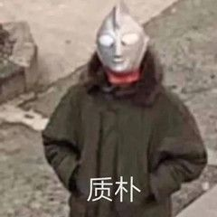
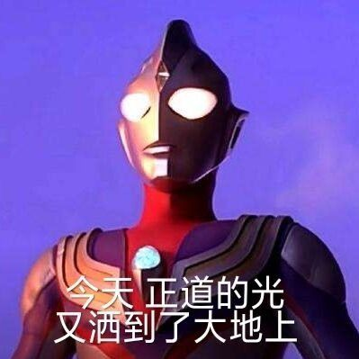

my story
我，一个普普通通的人。
若要说我有什么不一样的地方，我也想不起来，毕竟我也只是一只蒟蒻。喜欢宅和游戏（貌似并不冲突
）。喜欢乐观的面对各种事物，但又有点小自闭。

平生对于学习......
STOP!
什么时候变成了自我检讨了啊喂。
首先，作为一个游戏肥宅，最爱lol、mc等等，具体可以看game界面了解。对于游戏，我也能勉
强算是老玩家了。从小学一路杀到大学。不过可惜，来了华科大还是好好学习一下子的（bushi）。
但又放不心下游戏，故而还是会偶尔打上一两把,这种若近若离的感觉还是令人舒服的（bushi）。
其次，作为一个学习上还勉强过得去的人，平素最喜摸鱼，有着"ddl之神"（自封）的称号。看
似紧迫，实则稳如老狗，充分发挥人的潜力的事也没少干。相信各位华科人都有这样的经历，我就
不赘述了。（懒）
然后就是生活了。没什么好说的，一个字：绝。各位可以尽情的发挥想象力，基本可以对的上。
最后（估计也没人看）就是梦想了。其实我也没啥梦想，能财务自由然后宅着玩就挺好的。但这
朴素的梦想在如今恐怕也是有点难以实现的吧。
（完）